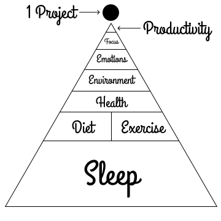

Sunday Night Dread
Have you ever gotten to the end of your weekend and suddenly been filled with a sense of terror?
That frightening realization that your free time, your weekend, your time for self improvement, learning, betterment, relaxation, your time for you, was coming to an end, and you utterly failed, again.
You didn't use your time wisely. You procrastinated. You got lost in your email, Reddit, YouTube, HackerNews, something, anything, a distraction like cleaning the house or a feed of cheap dopamine.
You burned your most precious resource: time.
And now sadness is filling your heart, and you feel Sunday Night Dread.
I've lived with this sense of dread for fifteen years, but I've finally learned how to overcome it. If you suffer from the same affliction, then read on. I have revelations to share. I have a recipe for beating procrastination again and again and again.
Let me start by sharing the parable of the perfect schedule.
The Perfect Schedule
I used to think that my lack of productivity was a result of poor time management, lack of discipline, an absence of willpower, maybe all three. I became obsessed with this idea that the perfect schedule would solve all three of those problems:
- Manage my time for me
- Keep me disciplined
- Remove my need for willpower
I told myself that if I came up with the perfect schedule, and I forced myself to follow it, then time would manage itself, I could just rely on the schedule, and willpower would become superfluous. Following a schedule like that would solve my procrastination problem. You know, that problem where you know you need to do something, but you find a million ways to avoid it until you absolutely have to do it.
My schedule would account for every minute, not leaving any time to even start procrastinating, forcing me to go from task A to task B to task C, so I never lost focus. The evil forces of procrastination could never creep into such a schedule.
My schedule would also quantify how much time per week, both in raw minutes and hours and by percentage, that I was spending on each area of interest. By categorizing my activities in this way, I thought I could use potato chip heuristics like 20 hours to learn a new skill or 10,000 hours to become an expert to predict my future accomplishments and plan around when I'd be a professional software developer or a decent meditator.
Here's what I thought perfection looked like defined in perfect 30 minute chunks:
Weekdays
| Hour | Activity |
|---|---|
| 05:00 | Awake, Meditate, Stretch |
| 05:30 | Workout |
| 06:00 | |
| 06:30 | Breakfast, Shower |
| 07:00 | Study |
| 07:30 | |
| 08:00 | |
| 08:30 | Travel to Work |
| 09:00 | Work |
| 09:30 | |
| 10:00 | |
| 10:30 | |
| 11:00 | |
| 11:30 | |
| 12:00 | |
| 12:30 | Lunch |
| Hour | Activity |
|---|---|
| 01:00 | Work |
| 01:30 | |
| 02:00 | |
| 02:30 | |
| 03:00 | |
| 03:30 | |
| 04:00 | |
| 04:30 | |
| 05:00 | |
| 05:30 | |
| 06:00 | Travel Home |
| 06:30 | Dinner, Reading |
| 07:00 | Study |
| 07:30 | |
| 08:00 | Leisure |
| 08:30 | |
| 09:00 | Read, Sleep |
A Pyramid of Presumption
You see my perception was that productivity is built on top of a bunch of false assumptions. The pyramid I imagined in my head looked like this:

The Pyramid of Productivity
In reality, real human productivity comes as a result of a totally different stack or pyramid of conditions. Real productivity looks like this:
